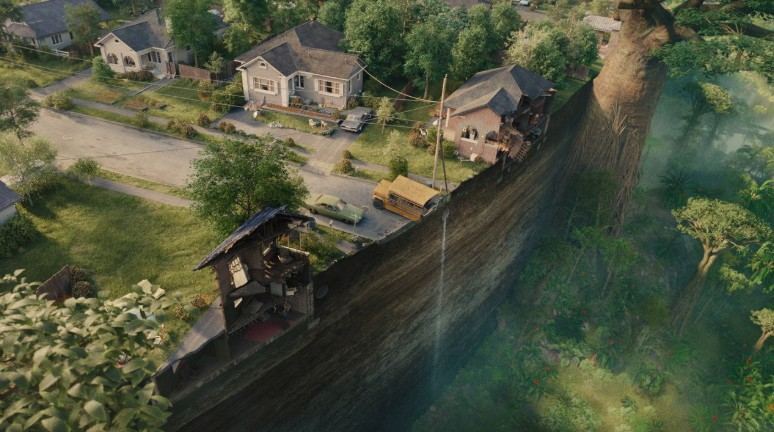

VVIPTV

Living room TV
OK
Arrow keys and Enter work while this is open.
 Monster: The Jeffrey Dahmer StoryS1 E2 · 38m leftNew episodeRe:Zero − Starting Life in Another WorldUp next · S4 E16
Monster: The Jeffrey Dahmer StoryS1 E2 · 38m leftNew episodeRe:Zero − Starting Life in Another WorldUp next · S4 E16 Obsession1h 40m leftNaruto Shippûden: The Movie1h 12m leftIn the Grey36m leftMonster: The Jeffrey Dahmer StoryS1 E2 · 38m leftNew episodeRe:Zero − Starting Life in Another WorldUp next · S4 E16Obsession1h 40m leftNaruto Shippûden: The Movie1h 12m leftIn the Grey36m left
Obsession1h 40m leftNaruto Shippûden: The Movie1h 12m leftIn the Grey36m leftMonster: The Jeffrey Dahmer StoryS1 E2 · 38m leftNew episodeRe:Zero − Starting Life in Another WorldUp next · S4 E16Obsession1h 40m leftNaruto Shippûden: The Movie1h 12m leftIn the Grey36m left